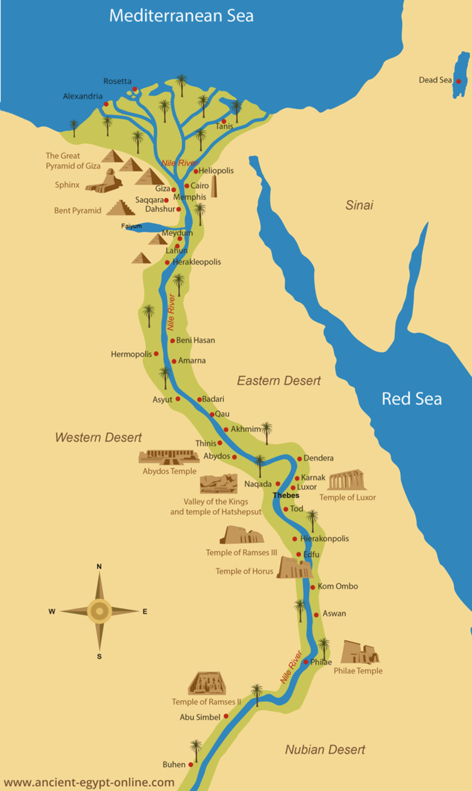

← Volver
Egipto Antiguo
🏠 Inicio
Pasá el mouse sobre un punto para ver el nombre.
Hacé clic
para ver el video.

Página diseñada por el Prof. de Historia Claudio Damián Sacco, con asistencia técnica mayoritaria de DeepSeek y minoritaria de ChatGPT y Gemini.